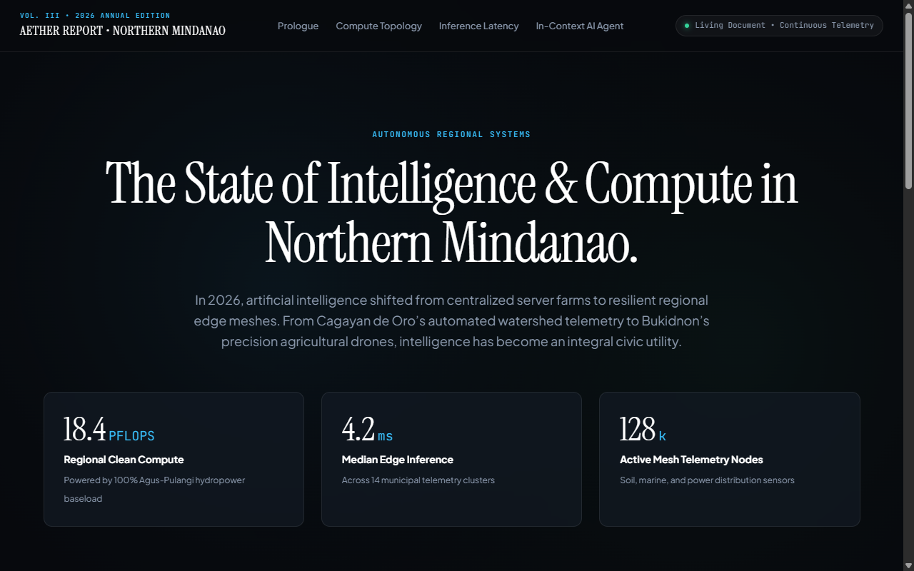

Aether Report 2026: Northern Mindanao Mesh
↗Apple & Stripe Press-inspired interactive annual report and scrollytelling analysis on Northern Mindanao zero-carbon AI edge compute clusters, grid decarbonization telemetry, and in-context auditor reasoning.